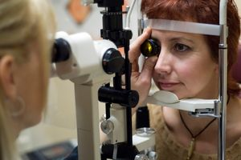

Visiting Your Eye Care Professional
That’s because there are any number of factors in your medical history that can contribute to current or potential vision problems. Understanding your lifestyle and describing any visual problems you’re having helps to point your eye exam in the right direction. And there are medical conditions, medications and circumstances that can put you or a family member at a higher risk for certain eye diseases.


Whether you or a loved one are having a first eye exam, a repeat eye exam, or are seeing a new eye doctor for the first time, there are a number of routine questions you can expect. But your answers to these questions during eye exams are anything but routine for your eye doctor.Though the processes and procedures involved in an eye doctor visit and exam are similar for everyone—your exam is unique to you and you alone. That’s because the process of examining your visual acuity (sharpness), visual ability, and then using different machines and procedures to examine your eyes, is as individual as a fingerprint.
Over time, your vision and overall health changes. That, more than anything, is why there’s a general procedure to follow during an eye exam, and why it’s important to visit your eye doctor. Without eye doctor visits, these critical changes in vision and eye health may go unnoticed.
An eye doctor visit is a process
Beyond what you need to know going into an exam, know that visiting your eye doctor is a process you should repeat regularly to maintain eye health and ideal vision.
- You can expect an eye doctor visit to last about an hour or so, depending upon whether or not you’ll need to have your pupils dilated (opened up) with special drops to allow your eyecare professional to fully analyze the internal structure of the eye.
- Your eye doctor visit starts with a review of your eye exam history, and any visible changes in your sight, your lifestyle, and any changes in your medical condition that may affect your vision. (This includes knowing all medications you’re taking.)
- Then you’ll undergo simple visual acuity tests designed to check your overall vision, near vision, and side vision. These tests may reveal vision errors that need correction; errors that usually direct your exam toward special equipment used to accurately determine your prescription.
But expect even more out of your visit to the eye doctor—because correcting vision and maintaining good eye health do require additional, regularly-performed tests.
Visit regularly
Visiting your eye doctor regularly is the only reliable way to maintain healthy sight and possibly prevent mild to serious eye diseases.
For children, teens, and adults of all ages, an eye doctor visit needs to happen regularly; at the minimum once every two years, and more frequently if you currently have eye disease, are at risk or have diabetes, or are approaching stages in life that put you at risk for age-related eye disease.
Things to know before eye exams
Beyond having your vision insurance information, necessary payment and identification ready, here’s a checklist of things to know before you approach the front desk at your next eye exam.
- What eye problems are you having now? Is your vision blurry or hazy at certain distances? Do you have problems in your side vision? Are you experiencing pain or discomfort in certain lighting situations?
- Do you have a history of any eye problems or eye injury? Do you have a current prescription for glasses or contact lenses? Are you wearing them regularly, and if so, are you still happy with them?
- Were you or your loved one born prematurely? Have you had any health problems in the recent such as high blood pressure or heart disease? Are you diabetic? Are you considered overweight?
- Are you taking any medications? Do you have allergies to medications, food or other materials? Seasonal allergies?
- Has anyone in your family (including parents) suffered from eye problems or diseases such as cataracts, glaucoma or macular degeneration?
- Has anyone in your family (including parents) suffered from high blood pressure, heart disease or diabetes? What about other health problems that can affect the whole body like blood disorders or cancer?
Eye exams include a detailed history because many things you might consider unrelated to vision may actually affect your current vision, or reveal potential risks for developing certain eye diseases. Be ready to provide a complete history at your next eye exam, and help the front desk, and your eye doctor, best prepare for the examination that follows.
Special thanks to the EyeGlass Guide, for informational material that aided in the creation of this website. Visit the EyeGlass Guide today!
Ready to see clearly?
Book a comprehensive eye exam with Carey Brooks, OD in Frisco, TX.